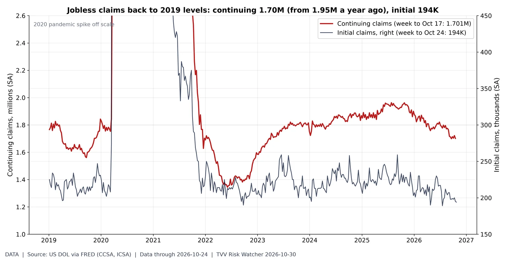
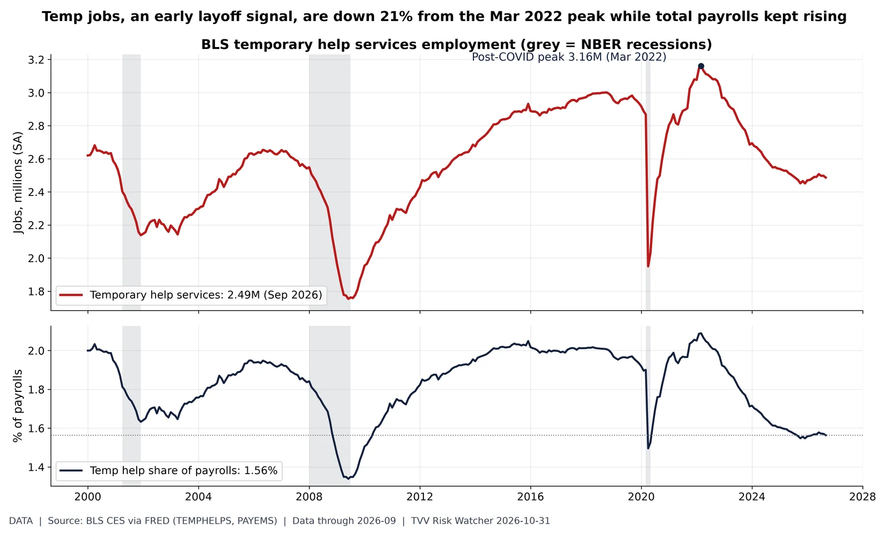
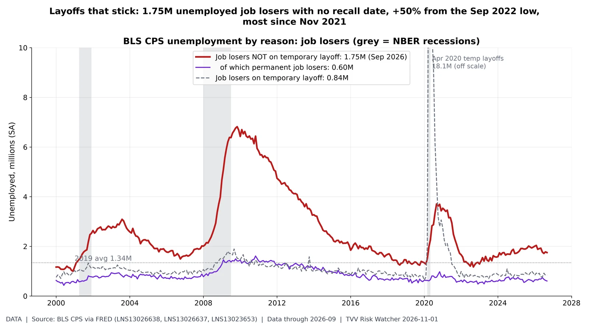

What the official US labor data show today: openings vs layoffs, jobless claims, long-term unemployment vs quits, temp help as an early signal, and job losers not expecting recall vs temporary layoffs.
Openings per layoff. BLS JOLTS (August 2026): 7.08M job openings vs 1.64M layoffs and discharges, 4.3 openings per layoff (2019 average 3.9; 2000-26 average 3.1). Layoffs were 1.83M a year earlier; the post-2021 high was 1.90M (Mar 2023). Grey bands = NBER recessions. [Data. Data: 2026-08 (monthly JOLTS; September JOLTS not yet in FRED file)] Source: https://fred.stlouisfed.org/series/JTSLDLhttps://fred.stlouisfed.org/series/JTSJOLhttps://www.bls.gov/jlt/

Claims back at 2019 levels. DOL (via FRED): 1.701M continuing claims in the week to Oct 17 (1.953M a year earlier; 2019 average 1.68M) vs initial claims of 194K in the week to Oct 24 (2019 average 218K). Continuing claims are 13% below a year ago and within 1% of the 2019 average: no sign yet in UI data of the broad AI-driven layoff wave that is feared; claims count only insured workers. [Data. Data: 2026-10-24 (initial); 2026-10-17 (continuing); DOL release Thu Oct 29] Source: https://fred.stlouisfed.org/series/CCSAhttps://fred.stlouisfed.org/series/ICSAhttps://www.dol.gov/ui/data.pdf

Long-term unemployment vs quits. BLS CPS unemployed 27 weeks and over (FRED UEMP27OV) 1.94M = 27.3% of all unemployed (UNEMPLOY 7.11M) in Sep 2026; 2019 average 21.1%. JOLTS quits rate 1.9% (Aug 2026; September JOLTS not yet in FRED). Low quits plus longer job searches = a 'low-hire, low-fire' market that is hard for job losers and graduates. Jobs/Labor series. [Data. Data: 2026-09 (CPS); JOLTS 2026-08] Source: https://fred.stlouisfed.org/series/UEMP27OVhttps://fred.stlouisfed.org/series/UNEMPLOYhttps://fred.stlouisfed.org/series/JTSQURTemp help jobs slide. BLS CES temporary help services (FRED TEMPHELPS) 2.487M in Sep 2026, 21.3% below its Mar 2022 peak of 3.161M; total nonfarm payrolls 159.0M. Share of payrolls 1.56%, lowest since May 2020. Employers usually cut temps before permanent staff. Jobs/Labor series. [Data. Data: 2026-09 (BLS Employment Situation)] Source: https://fred.stlouisfed.org/series/TEMPHELPShttps://fred.stlouisfed.org/series/PAYEMShttps://www.bls.gov/ces/

Permanent-type job losses rising. BLS CPS (FRED LNS13026638) unemployed job losers not on temporary layoff 1.750M in Sep 2026, up 50% from 1.170M in Sep 2022; 2019 average 1.34M; highest since Nov 2021 outside the COVID spike. Permanent job losers 0.605M (LNS13026637); on temporary layoff (expecting recall) 0.845M (LNS13023653). No-recall job loss is the layoff type tied to restructuring, including AI-linked cuts; temporary layoffs expect recall. Jobs/Labor series. [Data. Data: 2026-09 (BLS Employment Situation)] Source: https://fred.stlouisfed.org/series/LNS13026638https://fred.stlouisfed.org/series/LNS13026637https://fred.stlouisfed.org/series/LNS13023653https://www.bls.gov/cps/